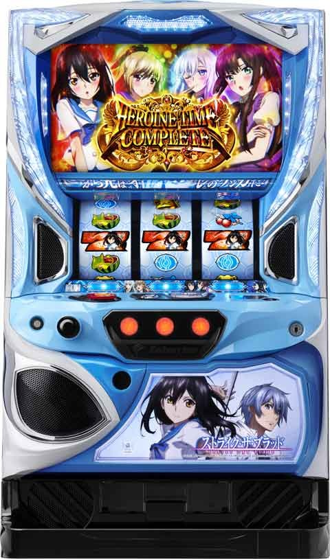

Lストライク・ザ・ブラッド

[天井情報]
599G(ボーナス&AT間) AT当選
[リセット判別]
不明
[有利区間について]
不明
狙い目
[ボーナス間天井狙い]
※ボーナススルーするほどAT当選率が上がる
※4スルー以降は基本エピソードポイントで押し引き
※エピソードポイント絡まない場合の狙い目は390Gハマり以降？
0スルー 390 G
1スルー 390G
2スルー
RB0回 410G
RB1回 370G
RB2回 240G
3スルー
RB0回 360G
RB1回 350G
RB2回 340G
RB3回 240G
4スルー
RB0回 300G
RB1回 320G
RB2回 130G
RB3回以降 0GからATまで
5スルー
RB0回 120G
RB1回 100G
RB2回以降 0GからATまで
6スルー
0GからATまで
[エピソードポイント狙い]
ポイント保有示唆時にpushボタンでボイス確認
「やばい、やばいやばい」はエピソードボーナスまで
[またぎの湯狙い]
AT後の引き戻しゾーン。
ヒロインランプの人数が多いほどコンプリートに近い。
3人なら引き戻し確認
1-2人は引き戻し確認不要
[有利区間切れ狙い]
不明
[リセット狙い]
0スルー 200 G
1スルー
RB0回 100G
RB1回 200G
2スルー以降
RB0回 200G
RB1回以上 0G
[エピソードポイント狙い]
50pt到達で次回エピソードボーナス
AT当選でptリセット
積極派 40ptから
慎重派 45ptから
AT後 平均 2.8ptスタート
リセ後 平均 30ptスタート
ビッグ当選 3pt
レギュラー当選 10pt
強レア役でもpt抽選
平均2.8pt獲得
強レア役確率1/136
少なく見積もって150G毎に2.5pt足していく感じ？
※ビッグは平均114枚、レギュラー平均47枚で判断
やめ時
BIG後、RB後 1G回してやめ
AT後 ヒロイン3人ならフォロー
参考元
基本情報
- メーカー: エンターライズ
- 機械割: 98.2% 〜 110.1%
- 導入開始日: 2024年04月08日（月）
- ゲーム性概要: リアルボーナス＋ATタイプで、通常時は基本的にボーナス契機でATを目指すゲーム性だ。ATはセット開始時のヒロインジャッジメントで引いた成立役によって、移行するATの種類が決定。ボーナスを絡めながらストックを獲得して、ATを継続させて行くゲーム性となる。


打ち方
打ち方・小役
打ち方（小役狙い）
［最初に狙う絵柄］

左リール上段付近に黒BARを目押し。右リールにこぼしはないのでハサミ打ちがオススメだ。
［BAR下段停止］ 成立役：ハズレorリプレイorベルor弱チャンス目

［角チェリー停止］ 成立役：弱チェリーor強チェリー

［スイカ上段停止］ 成立役：スイカor強チャンス目

［レア役の停止形］

ハサミ打ち時のリプレイ＆ベルのダブルテンパイハズレも弱チャンス目になる（BAR下段停止から）。
［リーチ目例］

ボーナス中・AT中の打ち方
基本的にナビに従って消化すればOKだが、ボーナス中のみ「白フラッシュ」が発生した場合はいずれかのリールに黒BARを狙って消化しよう。
［白フラッシュ］

解析情報通常時
小役関連
小役確率
| 役 | 確率 |
|---|---|
| リプレイ | 1/7.3 |
| 押し順ベル | 1/2.5 |
| 共通ベル | 1/41.0 |
| スイカ | 1/102.4 |
| 弱チェリー | 1/102.4 |
| 強チェリー | 1/273.1 |
| 弱チャンス目 | 1/102.4 |
| 強チャンス目 | 1/273.1 |
ボーナス同時当選期待度（トータル）
| 役 | 期待度 |
|---|---|
| スイカ | 3.4% |
| 弱チェリー | 6.3% |
| 強チェリー | 33.3% |
| 弱チャンス目 | 16.6% |
| 強チャンス目 | 33.3% |
リールロック経由のボーナス同時当選期待度
| 役 | ショート | ロング |
|---|---|---|
| スイカ | 27.5% | － |
| 弱チェリー | 41.6% | － |
| 強チェリー | 50.0% | 80.0% |
| 弱チャンス目 | 44.3% | － |
| 強チャンス目 | 50.0% | 80.0% |
リールロックのトータル期待度
| リールロックの種類 | 期待度 |
|---|---|
| ショート | 43.0% |
| ロング | 80.0% |
［高確・超高確滞在時］AT直撃当選率
※超高確中はボーナス当選でAT濃厚
内部状態関連
内部状態概要
通常・高確・超高確の3種類があり、高確以上でのボーナスはAT当選期待度がアップ。内部状態の昇格契機はレア役で、強チャンス目・強チェリー＜弱チャンス目＜弱チェリー＜スイカの順で期待できる。
内部状態 解説
| 項目 | 内容 |
|---|---|
| 種類 | 通常・高確・超高確 |
| 昇格契機 | おもに弱レア役 |
高確＆超高確移行抽選
高確・超高確はゲーム数管理型で、高確中に超高確へ移行した場合、超高確を優先して、超高確終了後に高確へ移行。 BIG終了後は50%で、カレイドボーナス終了後は必ず高確以上へ移行する。 高確・超高確中は強レア役時のAT直撃当選率がアップ、超高確中のボーナスはAT濃厚だ。
弱レア役時の高確以上移行率
| 役 | 通常→高確へ | 高確→超高確へ |
|---|---|---|
| スイカ | 50.0% | 16.8% |
| 弱チェリー | 37.5% | 12.5% |
| 弱チャンス目 | 18.8% | 1.6% |
［通常滞在時］ボーナス後の高確以上移行率 通常滞在時
| 契機 | 高確へ | 超高確へ |
|---|---|---|
| BIGボーナス後 | 49.6% | 0.4% |
| カレイドボーナス後 | 99.6% | 0.4% |
高確滞在時
| 契機 | 高確へ | 超高確へ |
|---|---|---|
| BIGボーナス後 | 99.6% | 0.4% |
| カレイドボーナス後 | 99.6% | 0.4% |
超高確滞在時
| 契機 | 高確へ | 超高確へ |
|---|---|---|
| BIGボーナス後 | － | 100% |
| カレイドボーナス後 | － | 100% |
AT後の高確以上移行率
| 契機 | 高確へ | 超高確へ |
|---|---|---|
| AT後 | 99.6% | 0.4% |
エピソードポイント
エピソードポイント解説
ボーナス終了時、AT終了時、レア役成立時に抽選されるポイントで、 50pt貯まるとボーナスがエピソードボーナスに変化 する。 ポイント獲得時は連続演出失敗時、またぎの湯やヴァトラーの客船転落時にポイントを示唆。ステージチェンジのパターンで所持ポイントが示唆される。 獲得時・所持ポイント示唆時ともに、ボタンPUSHで発生するボイスでポイント量を示唆してくれる。
エピソードポイント獲得の抽選タイミング
| No. | タイミング |
|---|---|
| 1 | ボーナス終了後 |
| 2 | AT終了後 |
| 3 | レア役成立時 |
| 4 | 有利区間移行時 |
ボタンPUSH時のセリフ別所持量示唆
| セリフ | 所持量期待度 |
|---|---|
| 勘弁してくれ | 弱 |
| 悪いが最後まで付き合ってもらうぜぇ | 中 |
| やばい。やばいやばい | 強 |
［獲得時の示唆］

少・中・多の3パターン（画像は多）
［所持ポイント示唆］

ステージチェンジ時の古城パターンはチャンス。目のエフェクトは青＜赤の順で期待できる。
エピソードポイント当選率
エピソードポイントは、有利区間移行時・ボーナス終了時・AT終了時・レア役成立時に獲得抽選。 設定5・6は獲得ポイントが優遇されているため、結果的にエピソードボーナスが発生しやすい 。 カレイドボーナス後は必ず10pt以上獲得できるので、朝イチにREGを2回引いて放置されている台があれば超狙い。強レア役でもポイントを獲得できるため、REG1回の台でも十分狙う価値がある。
天井
天井ゲーム数振り分け
天井ゲーム数はボーナスorAT間599Gで、有利区間移行時（おもに設定変更後）は最大天井が399Gに短縮。高設定ほど浅い天井が選ばれやすい。
演出動画
ロングフリーズ
超眷獣ボーナス＋AT大量ストック濃厚のプレミアムボーナス。リールロック3段階目から発生の可能性あり！
フリーズ
ロングフリーズ


リールロックの3段階目から発展。発生時の恩恵は超眷獣ボーナス＋AT大量ストックだ。
解析情報ボーナス時
BIGボーナス
BIG概要

AT突入のメイン契機で、消化中は毎ゲームATを抽選（AT中はセットストック抽選）。3種類の告知パターンを任意で選択することができる。
BIGボーナス性能
| 項目 | 内容 |
|---|---|
| 平均獲得枚数 | 約114枚 |
| AT当選期待度 | 40.2% |
| AT中ストック期待度 | 76.8% |
| 消化中の抽選 | レア役や狙えカットインでAT抽選 |
BIG中の告知演出パターン
| タイプ | 内容 |
|---|---|
| チャンス告知 | 消化中に狙えカットインが発生して ヒロイン図柄が揃えばAT濃厚 |
| いつでも告知 | 好きなタイミングでボタンをPUSHして 告知が発生すればAT濃厚 |
| 完全告知 | AT当選時に金シャッターが閉まる一発告知型 |
［BIGボーナス］AT当選率・継続ストック当選率
| 役 | 初当り時 | AT中 |
|---|---|---|
| スイカ | 12.5% | 25.0% |
| 弱チェリー | 12.5% | 25.0% |
| 強チェリー | 50.0% | 75.0% |
| 弱チャンス目 | 25.0% | 50.0% |
| 強チャンス目 | 50.0% | 75.0% |
| 狙え［青］ | 9.6% | 9.6% |
| 狙え［緑］ | 50.2% | 50.2% |
| 狙え［赤］ | 94.4% | 94.4% |
| 狙え［虹］ | 100% | 100% |
※当該ボーナスでストックに1回当選するまでの抽選値
AT中は通常時に比べ、レア役時の当選率が大幅にアップする。
カレイドボーナス
カレイドボーナス概要

REG的な存在で、消化中はおもにレア役でATを抽選（AT中はセットストック抽選）。狙えカットインやPUSHボタンが出現すればAT当選のチャンスだ。
カレイドボーナス性能
| 項目 | 内容 |
|---|---|
| 平均獲得枚数 | 約47枚 |
| AT当選期待度 | 11.6% |
| AT中ストック期待度 | 69.1% |
| 消化中の抽選 | レア役や狙えカットインでAT抽選 |
［カレイドボーナス］AT当選率・継続ストック当選率
| 役 | 初当り時 | AT中 |
|---|---|---|
| スイカ | 6.3% | 50.0% |
| 弱チェリー | 6.3% | 50.0% |
| 強チェリー | 50.0% | 100% |
| 弱チャンス目 | 12.5% | 50.0% |
| 強チャンス目 | 50.0% | 100% |
| 狙え［虹］ | 100% | 100% |
※※当該ボーナスでストックに1回当選するまでの抽選値
BIGボーナス中と同じく、AT中はレア役時の当選率が大幅にアップ。レア役を引けば高確率でAT継続につながる。
エピソードボーナス
エピソードボーナス概要

BIG・カレイドボーナスの一部で発生するAT濃厚のボーナス。エピソードの種類は4つで、消化中はATのセットストックが抽選される。
エピソードボーナス性能
| 項目 | 内容 |
|---|---|
| 平均獲得枚数 | 約47枚or約114枚 |
| AT当選期待度 | 100% |
| 消化中の抽選 | レア役や狙えカットインで ATのセットストック抽選 |
ストック特化ボーナス
超眷獣ボーナス概要

ヒロインジャッジメント中にBIGを引くと移行するボーナスで、“狙え”発生頻度が大幅にアップするため高確率でATセットストックを獲得できる。
超眷獣ボーナス性能
| 項目 | 内容 |
|---|---|
| 平均獲得枚数 | 約114枚 |
| 消化中の抽選 | ATのセットストック抽選 |
| その他 | レア役時のストック期待度は50%超、 狙えの頻度が大幅にアップ |
| 期待獲得枚数 | 約1200枚 |
カレイドボーナスEX概要

ヒロインジャッジメント中のREGはカレイドボーナスEXになって、“狙え”発生頻度が大幅にアップするため、消化中のATセットストック当選率が大幅にアップする。
カレイドボーナスEX性能
| 項目 | 内容 |
|---|---|
| 平均獲得枚数 | 約47枚 |
| 消化中の抽選 | ATのセットストック抽選 |
| その他 | レア役時のストック期待度は50%超、 狙え発生頻度が大幅にアップ |
| 期待獲得枚数 | 約1000枚 |
［超眷獣ボーナス］AT継続ストック当選率
| 役 | 当選率 |
|---|---|
| スイカ | 50.0% |
| 弱チェリー | 50.0% |
| 強チェリー | 100% |
| 弱チャンス目 | 50.0% |
| 強チャンス目 | 100% |
| 狙え［通常］ | 47.5% |
| 狙え［虹］ | 100% |
［カレイドボーナスEX］AT継続ストック当選率
| 役 | 当選率 |
|---|---|
| スイカ | 50.0% |
| 弱チェリー | 50.0% |
| 強チェリー | 100% |
| 弱チャンス目 | 50.0% |
| 強チャンス目 | 100% |
| 狙え［虹］ | 100% |
AT初期ストック
AT初期ストック抽選
AT初回突入時は内部的に複数ストックを獲得することがあるため、AT中に自力で継続させなくてもセット継続することが比較的多い。
ヒロインジャッジメント
ヒロインジャッジメント概要

AT突入時やセット継続時に移行する1G間の発展先AT決定ゾーンで、成立役に応じたATに突入。4種類のヒロインタイムをコンプリートして 「ヒロインタイムコンプリート」 を目指すのが当面の目標となる。 レア役成立時は特化ゾーン「空隙の魔女」へ、ボーナスを引ければストック特化型ボーナスへ移行する。
ヒロインジャッジメントの成立役別発展先
| 役 | 発展先 | |
|---|---|---|
| ハズレ | ヒロインタイムバトル | |
| 押し順ベル | 左1st | ヒロインタイム 雪菜 |
| 押し順ベル | 中1st | ヒロインタイム 紗矢華 |
| 押し順ベル | 右1st | ヒロインタイム 浅葱 |
| リプレイ | ヒロインタイム ラ・フォリア | |
| レア役（ボーナス非当選） | 空隙の魔女（なつきタイム） | |
| BIGボーナス | 超眷獣（スーパービースト）ボーナス | |
| カレイドボーナス | カレイドボーナスEX |
発展先は液晶にも表示されているためわかりやすい。
移行確率（1Gで対象の役を引く確率）
| 移行先 | 確率 |
|---|---|
| ヒロインタイムバトル | 1/2.5 |
| ヒロインタイム 雪菜 | 1/7.4 |
| ヒロインタイム 紗矢華 | 1/7.4 |
| ヒロインタイム 浅葱 | 1/7.4 |
| ヒロインタイム ラ・フォリア | 1/7.3 |
| 空隙の魔女 | 1/31.6 |
| 超眷獣ボーナスorカレイドボーナスEX | 1/199.8 |
下パネルがフラッシュすればレア役以上、消灯すればボーナス濃厚となる。
ヒロインタイムバトル
ヒロインタイムバトル概要

ヒロインジャッジメントでハズレを引いた時に突入するATで、突入時に約34%で継続抽選をおこない、消化中はレア役でATのセットストックを抽選。滞在ステージで継続期待度が示唆され、ラスト4Gのバトルで継続の成否が告知される。
ヒロインタイムバトル性能
| 項目 | 内容 |
|---|---|
| 継続ゲーム数 | 30G |
| 1Gあたりの純増 | 約1.4枚 |
| 消化中の抽選 | ATのセットストック抽選 |
| その他 | 開始時の約34%で継続 |
［4種類のステージ］

白＜青＜緑＜赤の順で継続期待度がアップ。
［継続バトル］

［ヒロインタイムバトル］AT継続ストック当選率
| 役 | 当選率 |
|---|---|
| AT開始時（成立役不問） | 33.6% |
| スイカ | 0.4% |
| 弱チェリー | 0.4% |
| 強チェリー | 3.1% |
| 弱チャンス目 | 0.4% |
| 強チャンス目 | 3.1% |
※上記当選率はストックなし時の抽選値
AT継続期待度
| ステージ | 期待度 |
|---|---|
| 戦王の使者篇（白） | 50.2% |
| 天使炎上篇（青） | 25.3% |
| 観測者たちの宴篇（緑） | 36.0% |
| 暁の帝国篇（赤） | 86.4% |
［戦王の使者篇］

［天使炎上篇］

［観測者たちの宴篇］

［暁の帝国篇］

ヒロインタイム
ヒロインタイム概要

ヒロインジャッジメントの押し順ベルorリプレイ時に突入するATで、対応役（対応1stナビ）によって種類が変化。各ヒロインのATには対応役（ラ・フォリアは狙えカットイン高確）があって、 対応役を引けばセット継続（セットストック）の大チャンス になる。
ヒロインタイム性能
| 項目 | 内容 |
|---|---|
| 継続ゲーム数 | 30G |
| 1Gあたりの純増 | 約1.4枚 |
| 平均継続率 | 約80%（ストック込み） |
| 消化中の抽選 | おもに各ヒロインの対応役で ATのセットストック抽選 |
ヒロインタイムごとの対応役
| ヒロイン | 対応役 |
|---|---|
| 雪菜 | 弱チェリー・強チェリー |
| 紗矢華 | 弱チャンス目・強チャンス目 |
| 浅葱 | スイカ |
| ラ・フォリア | 狙えカットイン高確 |
［雪菜］

［紗矢華］

［浅葱］

［ラ・フォリア］

［ヒロインタイム］AT継続ストック当選率
| 役 | 雪菜 | 紗矢華 | 浅葱 | ラ・フォリア |
|---|---|---|---|---|
| スイカ | 12.5% | 25.0% | 100% | 5.1% |
| 弱チェリー | 50.0% | 12.5% | 5.5% | 5.1% |
| 強チェリー | 100% | 50.0% | 33.6% | 25.0% |
| 弱チャンス目 | 25.0% | 50.0% | 12.5% | 12.5% |
| 強チャンス目 | 50.0% | 100% | 33.6% | 25.0% |
| 狙え［青］ | 7.2% | 7.2% | 7.2% | トータル 11.6% |
| 狙え［緑］ | 24.2% | 24.2% | 24.2% | トータル 11.6% |
| 狙え［赤］ | 84.7% | 84.7% | 84.7% | トータル 11.6% |
| 狙え［虹］ | 100% | 100% | 100% | トータル 11.6% |
※上記当選率はストックなし時の抽選値
［ラ・フォリアは演出で狙え期待度を示唆］

ラ・フォリア以外は狙えカットインの種類で期待度を示唆しているが、継続のメイン契機がヒロイン図柄揃いになるラ・フォリアは、発生する演出で期待度を示唆。青系演出はチャンス、赤系演出は激アツだ。
空隙の魔女（なつきタイム）
空隙の魔女概要

ヒロインジャッジメント時にレア役を引くと突入。押し順ベルやレア役、狙えカットイン成功でATセットストックを抽選する特化ゾーン。 押し順ベルでも約20%でストックを獲得できる ため、ヒキ次第で大量ストックに期待できる。
空隙の魔女（なつきタイム）性能
| 項目 | 内容 |
|---|---|
| 継続ゲーム数 | 30G |
| 1Gあたりの純増 | 約1.4枚 |
| 消化中の抽選 | 押し順ベル（期待度約20%）とレア役で ATのセットストック抽選 |
［空隙の魔女］AT継続ストック当選率
| 役 | 当選率 |
|---|---|
| ベル | 20.3% |
| スイカ | 3.1% |
| 弱チェリー | 3.1% |
| 強チェリー | 25.0% |
| 弱チャンス目 | 6.3% |
| 強チャンス目 | 25.0% |
ヒロインタイムコンプリート
ヒロインタイムコンプリート概要

4人のヒロインタイムすべてに当選した時に突入する特化ゾーン（4人目のヒロインタイムに当選したタイミングで突入）。消化中は レア役や狙えカットイン発生でのストック当選率が大幅にアップ する。
さらに、1契機での複数ストック期待度も高く、ストック時に「ワンモアチャンス」が発生すれば追加ストックorボーナス当選濃厚となる。
ヒロインタイムコンプリート性能
| 項目 | 内容 |
|---|---|
| 継続ゲーム数 | 30G |
| 1Gあたりの純増 | 約1.4枚 |
| 消化中の抽選 | ATのセットストック抽選 |
| 期待獲得枚数 | 約1400枚 |
［セットストック］

［ワンモアチャンス］

ATストック当選率
レア役はストック獲得濃厚。さらに強レア役時は50%でストックを2個獲得できる。
［ヒロインタイムコンプリート］AT継続ストック当選率
| 役 | 当選率 |
|---|---|
| スイカ | 100% |
| 弱チェリー | 100% |
| 強チェリー | 100% |
| 弱チャンス目 | 100% |
| 強チャンス目 | 100% |
| 狙え［青］ | 25.0% |
| 狙え［緑］ | 84.4% |
| 狙え［赤］ | 99.7% |
| 狙え［虹］ | 100% |
ストック当選時の個数振り分け
| 役 | 1個 | 2個 |
|---|---|---|
| スイカ | 87.5% | 12.5% |
| 弱チェリー | 87.5% | 12.5% |
| 強チェリー | 50.0% | 50.0% |
| 弱チャンス目 | 75.0% | 25.0% |
| 強チャンス目 | 50.0% | 50.0% |
| 狙え［青］ | 100% | － |
| 狙え［緑］ | 100% | － |
| 狙え［赤］ | 100% | － |
| 狙え［虹］ | 100% | － |
※2個獲得時はワンモアタイムで告知
演出情報
通常時
ステージごとの示唆
| ステージ | 示唆 |
|---|---|
| 古城宅 | デフォルト |
| 彩海学園 | デフォルト |
| 通学路 | デフォルト |
| 那月の部屋 | 高確示唆 |
| ヴァトラーの客船 | 超高確示唆 |
| またぎの湯 （AT終了後） | 滞在中のAT当選で ヒロインタイムのコンプ状況を引き継ぐ |
| 波朧院フェスタ | AT本前兆濃厚 |
［古城宅］

［彩海学園］

［通学路］

［那月の部屋］

［ヴァトラーの客船］

［またぎの湯］

［波朧院フェスタ］

連続演出
各連続演出は赤タイトルになればチャンスアップ、虹色なら成功濃厚。演出中のチャンスアップは発生した時点で激アツ、2回出れば期待度90%オーバー！
［通常時］連続演出期待度
| 連続演出 | 期待度 |
|---|---|
| 古城を見つけろ | 12.3% |
| セキュリティを突破しろ | 13.7% |
| 戦王の死者篇 | 28.8% |
| 天使炎上篇 | 48.8% |
| 暁の帝国篇 | 82.1% |
チャンスアップ発生時の期待度
| パターン | 期待度 |
|---|---|
| チャンスアップ1回 | 80%以上 |
| チャンスアップ2回 | 90%以上 |
| 赤タイトル | 80%以上 |
| 虹タイトル | 100% |
［古城を見つけろ］詳細期待度
| タイトル | CU | 俺の喧嘩 | PUSH | 期待度 |
|---|---|---|---|---|
| 白 | なし | なし | － | 8.4% |
| 白 | 1回 | なし | － | 86.1% |
| 白 | 2回 | なし | － | 93.1% |
| 白 | なし | あり | － | 93.1% |
| 白 | 1回 | あり | － | 100% |
| 白 | 2回 | あり | － | BBorAT |
| 赤 | なし | なし | － | 83.9% |
| 赤 | 1回 | なし | － | 94.7% |
| 赤 | 2回 | なし | － | 100% |
| 赤 | なし | あり | － | 100% |
| 赤 | 1回 | あり | － | BBorAT |
| 赤 | 2回 | あり | － | EPBB |
| 虹 | 2回 | なし | － | BBorAT |
| 虹 | 1回 | あり | － | EPBB |
※CU…チャンスアップ、BB…BIGボーナス、EPBB…エピソードボーナスの略
［セキュリティを突破しろ］詳細期待度
| タイトル | CU | 俺の喧嘩 | PUSH | 期待度 |
|---|---|---|---|---|
| 白 | なし | なし | － | 8.9% |
| 白 | 1回 | なし | － | 82.2% |
| 白 | 2回 | なし | － | 91.7% |
| 白 | なし | あり | － | 94.0% |
| 白 | 1回 | あり | － | 100% |
| 白 | 2回 | あり | － | BBorAT |
| 赤 | なし | なし | － | 82.8% |
| 赤 | 1回 | なし | － | 96.9% |
| 赤 | 2回 | なし | － | 100% |
| 赤 | なし | あり | － | 100% |
| 赤 | 1回 | あり | － | BBorAT |
| 赤 | 2回 | あり | － | EPBB |
| 虹 | 2回 | なし | － | BBorAT |
| 虹 | 1回 | あり | － | EPBB |
※CU…チャンスアップ、BB…BIGボーナス、EPBB…エピソードボーナスの略
［戦王の使者篇］詳細期待度
| タイトル | CU | 俺の喧嘩 | PUSH | 期待度 |
|---|---|---|---|---|
| 白 | なし | なし | なし | 15.3% |
| 白 | なし | なし | あり | 84.0% |
| 白 | 1回 | なし | なし | 83.4% |
| 白 | 1回 | なし | あり | 95.9% |
| 白 | 2回 | なし | なし | 93.7% |
| 白 | 2回 | なし | あり | 100% |
| 白 | なし | あり | なし | 98.7% |
| 白 | なし | あり | あり | 100% |
| 白 | 1回 | あり | なし | 100% |
| 白 | 1回 | あり | あり | BB以上 |
| 白 | 2回 | あり | なし | BB以上 |
| 白 | 2回 | あり | あり | BB以上 |
| 赤 | なし | なし | なし | 87.2% |
| 赤 | なし | なし | あり | 93.4% |
| 赤 | 1回 | なし | なし | 95.9% |
| 赤 | 1回 | なし | あり | 100% |
| 赤 | 2回 | なし | なし | 100% |
| 赤 | 2回 | なし | あり | BB以上 |
| 赤 | なし | あり | なし | 100% |
| 赤 | なし | あり | あり | BB以上 |
| 赤 | 1回 | あり | なし | BB以上 |
| 赤 | 1回 | あり | あり | EPBB |
| 赤 | 2回 | あり | なし | EPBB |
| 赤 | 2回 | あり | あり | EPBB |
| 虹 | なしorCUかPUSHが1回だけ発生 | BB以上 | ||
| 虹 | CU・PUSHが1回ずつ以上 | EPBB | ||
| 虹 | 不問 | あり | 不問 | EPBB |
※CU…チャンスアップ、BB…BIGボーナス、EPBB…エピソードボーナスの略
［天使炎上篇］詳細期待度
| タイトル | CU | 俺の喧嘩 | PUSH | 期待度 |
|---|---|---|---|---|
| 白 | なし | なし | なし | 34.5% |
| 白 | なし | なし | あり | 86.2% |
| 白 | 1回 | なし | なし | 85.7% |
| 白 | 1回 | なし | あり | 94.3% |
| 白 | 2回 | なし | なし | 95.7% |
| 白 | 2回 | なし | あり | 100% |
| 白 | なし | あり | なし | 99.4% |
| 白 | なし | あり | あり | 100% |
| 白 | 1回 | あり | なし | 100% |
| 白 | 1回 | あり | あり | BB以上 |
| 白 | 2回 | あり | なし | BB以上 |
| 白 | 2回 | あり | あり | BB以上 |
| 赤 | なし | なし | なし | 89.5% |
| 赤 | なし | なし | あり | 91.5% |
| 赤 | 1回 | なし | なし | 93.8% |
| 赤 | 1回 | なし | あり | 100% |
| 赤 | 2回 | なし | なし | 100% |
| 赤 | 2回 | なし | あり | BB以上 |
| 赤 | なし | あり | なし | 100% |
| 赤 | なし | あり | あり | BB以上 |
| 赤 | 1回 | あり | なし | BB以上 |
| 赤 | 1回 | あり | あり | EPBB |
| 赤 | 2回 | あり | なし | EPBB |
| 赤 | 2回 | あり | あり | EPBB |
| 虹 | なしorCUかPUSHが1回だけ発生 | BB以上 | ||
| 虹 | CU・PUSHが1回ずつ以上 | EPBB | ||
| 虹 | 不問 | あり | 不問 | EPBB |
※CU…チャンスアップ、BB…BIGボーナス、EPBB…エピソードボーナスの略
［暁の帝国篇］詳細期待度
| タイトル | CU | 俺の喧嘩 | PUSH | 期待度 |
|---|---|---|---|---|
| 白 | なし | なし | なし | 72.1% |
| 白 | なし | なし | あり | 100% |
| 白 | 1回 | なし | なし | 100% |
| 白 | 1回 | なし | あり | 100% |
| 白 | 2回 | なし | なし | 100% |
| 白 | 2回 | なし | あり | 100% |
| 白 | なし | あり | なし | 100% |
| 白 | なし | あり | あり | 100% |
| 白 | 1回 | あり | なし | 100% |
| 白 | 1回 | あり | あり | BB以上 |
| 白 | 2回 | あり | なし | BB以上 |
| 白 | 2回 | あり | あり | BB以上 |
| 赤 | なし | なし | なし | 100% |
| 赤 | なし | なし | あり | 100% |
| 赤 | 1回 | なし | なし | 100% |
| 赤 | 1回 | なし | あり | 100% |
| 赤 | 2回 | なし | なし | 100% |
| 赤 | 2回 | なし | あり | BB以上 |
| 赤 | なし | あり | なし | 100% |
| 赤 | なし | あり | あり | BB以上 |
| 赤 | 1回 | あり | なし | BB以上 |
| 赤 | 1回 | あり | あり | EPBB |
| 赤 | 2回 | あり | なし | EPBB |
| 赤 | 2回 | あり | あり | EPBB |
| 虹 | なしorCUかPUSHが1回だけ発生 | BB以上 | ||
| 虹 | CU・PUSHが1回ずつ以上 | EPBB | ||
| 虹 | 不問 | あり | 不問 | EPBB |
※CU…チャンスアップ、BB…BIGボーナス、EPBB…エピソードボーナスの略
暁の帝国篇はチャンスアップが発生した時点で成功濃厚！
［古城を見つけろ］

［セキュリティを突破しろ］

［戦王の使者篇］

［天使炎上篇］
［暁の帝国篇］

擬似連演出
擬似連は2種類で、おもに強レア役に対応。弱レア役だった場合はボーナスの大チャンスとなる。俺の喧嘩演出は発展告知の次ゲームで発生する激アツパターンだ。
擬似連・ボーナス期待度
| 連続回数 | LED擬似連 | キャラ擬似連 |
|---|---|---|
| 1回目（青） | 15.5% | 86.8% |
| 2連（緑） | 41.0% | 95.5% |
| 3連（赤） | 90.8% | 99.6% |
| 4連（金） | 100% | 100% |
俺の喧嘩演出・ボーナス期待度
| パターン | 期待度 |
|---|---|
| 古城 | 98.6% |
| 古城＋雪菜 | 99.6% |
［LED擬似連］

［キャラ擬似連］

［俺の喧嘩演出：古城］

［俺の喧嘩演出：古城＋雪菜］

古城のあとに雪菜が登場するパターン。
監獄結界ミッション

監獄結界に移行するかどうかを告知する演出。チャンスアップ発生時は本前兆期待度もアップする。
監獄結界移行期待度
| パターン | 期待度 | |
|---|---|---|
| 監獄結界を見つけ出せ | 白タイトル | 56.5% |
| 監獄結界を見つけ出せ | 赤タイトル | 100% |
監獄結界（前兆）
監獄結界概要

AT前兆ステージで、突入時はおもに1G間のミッション「監獄結界を見つけ出せ」を経由して突入。滞在中はエフェクトの色が昇格するほど期待度がアップ、最終的にラストの連続演出でAT突入の成否が告知される。 突入時のAT期待度 31.57% だ。
［エフェクトの色］

青＜黄＜緑＜赤の順で期待度アップ。
連続演出（AT当選ジャッジ）
監獄結界のラストに発生する連続演出の対戦相手は仙都木阿夜＜ロストの順でチャンス。赤タイトルなどチャンスアップが発生すれば大チャンス、VSロストはチャンスアップ発生＝AT濃厚となる。
［監獄結界中］連続演出のAT期待度
| 連続演出 | トータル | チャンスアップ発生時 |
|---|---|---|
| VS仙都木阿夜 | 17.94% | 80%以上 |
| VSロスト | 85.26% | 100% |
連続演出期待度詳細
| タイトル | CU | PUSH | VS仙都木阿夜 | VSロスト |
|---|---|---|---|---|
| 白 | なし | なし | 6.44% | 74.36% |
| 白 | なし | あり | 87.02% | 100% |
| 白 | 1回 | なし | 82.82% | 100% |
| 白 | 1回 | あり | 93.47% | 100% |
| 白 | 2回 | なし | 92.59% | 100% |
| 白 | 2回 | あり | 100% | 100% |
| 赤 | なし | なし | 92.53% | 100% |
| 赤 | なし | あり | 97.54% | 100% |
| 赤 | 1回 | なし | 97.52% | 100% |
| 赤 | 1回 | あり | 100% | 100% |
| 赤 | 2回 | なし | 100% | 100% |
| 赤 | 2回 | あり | 複数ストック濃厚 | |
| 虹 | 不問 | 不問 | 複数ストック濃厚 |
※CU…チャンスアップ
［VS仙都木阿夜］

［VSロスト］

エフェクト別本前兆期待度
| 色 | 選択割合 | 期待度 |
|---|---|---|
| 白 | 0.4% | 100% |
| 青 | 23.6% | 19.0% |
| 黄 | 42.4% | 24.3% |
| 緑 | 27.4% | 41.8% |
| 赤 | 5.6% | 79.0% |
| 虹 | 0.3% | 100% |
| トータル | － | 31.6% |
演出法則
| 演出 | 法則 |
|---|---|
| 囚人捕縛演出 | 予告音なしの白文字以外は捕縛濃厚 |
| 煌坂追撃演出 | 捕縛濃厚（2G連続で捕縛する場合のみ選択） |
| 紳士捕縛 チャンス | 捕縛成功でAT濃厚、予告音なし時期待度17.7%、 予告音複合で成功濃厚 |
| シャッター発展 | 発生した時点でAT濃厚 |
| 突アツカットイン | 発生した時点でボーナスorAT濃厚 |
| 次回予告 | 発展先別の期待度は VS仙都木阿夜：98.76%、VSロスト：99.94% |
［エフェクト変化：赤］

［囚人捕縛：冥賀］

［煌坂追撃演出］

［紳士捕縛チャンス演出］

［突アツカットイン演出］

キャラごとのパターンがある。
ボーナス共通
超眷獣ボーナス中のATストック期待度
| 演出 | 期待度 |
|---|---|
| 狙えカットイン | 約50% |
| アルナスル・ミニウム | 28.4% |
| レグルス・アウルム | 90.0% |
| サダルメリク・アルバス | 100% |
［狙えカットイン］

［アルナスル・ミニウム］

ヒロインタイムバトル
セット開始画面の示唆
示唆内容はヒロインタイムと同じ。 詳細はコチラ
ステージ別・ジャッジ成功期待度
| パターン | 戦王の 使者篇 | 天使 炎上篇 | 観測者たち の宴篇 | 暁の 帝国篇 |
|---|---|---|---|---|
| CUなし | 13.6% | 5.0% | 8.1% | 49.8% |
| 赤タイトルのみ | 92.4% | 80.3% | 87.1% | 98.7% |
| 通常ヒロインCU | 50.2% | 25.3% | 36.0% | 86.4% |
| チャンスヒロイン | 94.2% | 84.4% | 90.0% | － |
| 赤カットインのみ | 50.2% | 25.3% | 36.0% | 86.4% |
| CU2個以上複合 | 100% | 100% | 100% | 100% |
| 虹タイトル | ストック3個以上濃厚 | |||
| 虹文字 | ストック2個以上濃厚 |
［連続演出］

ステージに対応した対戦相手が登場する。
［赤タイトル］

［チャンスヒロイン］

ヒロインタイム
AT中の演出法則
| パターン | 法則 | |
|---|---|---|
| BGM変化 | 継続＋ストック1個以上濃厚 | |
| セット 開始画面 | デフォルト | 特になし |
| セット 開始画面 | コスプレ | 継続濃厚 |
| セット 開始画面 | ヒロイン集合 | 継続＋ストック1個以上濃厚 |
| セット 開始画面 | 全員集合 | 継続＋ストック2個以上濃厚 |
| 会話演出 | 消化中のATとは 別のヒロイン登場で大チャンス | |
| カウントダウン演出 | 消化中のATとは 別のヒロイン登場で大チャンス | |
| 那月登場 | 強レア役対応、弱レア役は大チャンス |
BGM変化発生率
| 内部的な状態 | 発生率 |
|---|---|
| 継続＋ストック1個 | 12.50% |
| 継続＋ストック2個以上 | 31.25% |
ヒロインタイムバトルとヒロインタイム共通で、開始画面でストックの有無を示唆。選択されたAT以外のヒロインが登場すれば大チャンスとなる法則もなどもあるので注目しておきたい。
［デフォルト］

バトルでは古城、ヒロインタイムでは選ばれたヒロインが登場。
［コスプレ］

赤背景でコスプレしたヒロインが登場する。
［ヒロイン集合］

［全員集合］

空隙の魔女（なつきタイム）
［空隙の魔女］演出法則
| パターン | 法則 |
|---|---|
| 下パネル点滅 | ストックorボーナス濃厚 |
| 下パネル消灯 | ストック＋ボーナス濃厚 |
| リール回転開始時にベルナビ発生 | ストックorボーナス濃厚 |
| 那月罵倒演出 | ストック期待度17.4% |
［那月罵倒演出］

ヒロインタイムコンプリート
［ヒロインタイムコンプリート］演出法則
| パターン | 法則 |
|---|---|
| 下パネル点滅 | ストックorボーナス濃厚 |
| 下パネル消灯 | ストック＋ボーナス濃厚 |
| リール発光［青］ | レア役濃厚（ストック濃厚） |
| ドデカリール演出 | ボーナス濃厚 |
| 発光なしのレア役 | ワンモアチャンス濃厚 |
リール発光のレア役成立（＝ストック）期待度
| 発光 | 期待度 |
|---|---|
| なし | 0.3% |
| 白 | 16.0% |
| 青 | 100% |
［ドデカリール演出］

カスタム機能
カスタム機能紹介


メニュー画面からキャラクターカスタムとウーファーカスタムを設定することができる。
キャラクターカスタム
| 項目 | 内容 |
|---|---|
| 選べるキャラ数 | 9人 |
| カスタムで変わる要素 | 通常画面の常駐キャラ、タイトルコール、 ナビボイス・狙えカットインのキャラ |
ウーファーカスタム
| 項目 | 内容 |
|---|---|
| カスタム時の特徴 | ボーナス当選時の約75%でウーファー発生 |
| ウーファー発生タイミング | レバーON時、第1停止時、第3停止時 |